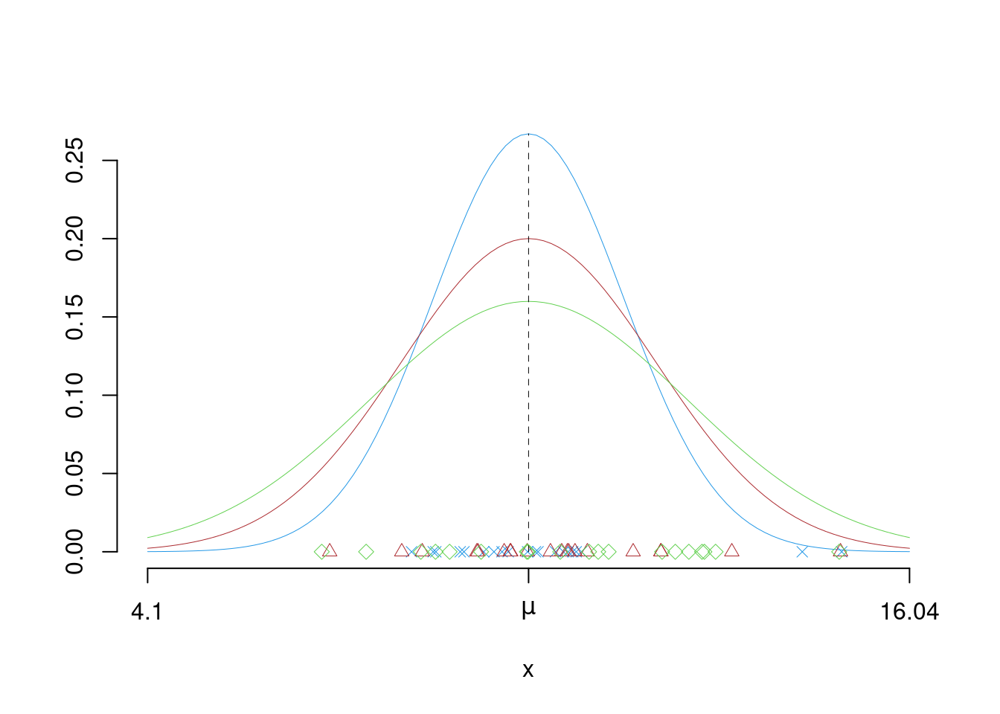

Capitolo 11 Elementi di Teoria della Stima
Stimare, in statistica, significa scegliere un valore o un insieme dei parametri di popolazione alla luce di un campione.
11.1 Campionamento
Un campione casuale è un certo numero di \(n\) di osservazioni prese a caso dalla popolazione \(\mathscr{P}\)
Un campione casuale è la migliore garanzia che abbiamo affinché la scelta dell’unità da rilevare non sia guidata da criteri che possano alterare i risultati.
Alcune informazioni possono essere usate per suddividere la Popolazione di partenza in sottogruppi prima di estrarre campioni. La Teoria Dei Campioni è quella disciplina della statistica che studia come costruire un campione che sia, al tempo stesso sufficientemente piccolo e sufficientemente rappresentativo.
In questo corso guarderemo una sola forma di campionamento declinata in due modi
- Campionamento Casuale Semplice Senza reintroduzione (equivalente delle estrazioni SR)
- Campionamento Casuale Semplice Con reintroduzione (equivalente delle estrazioni CR)
11.1.1 Lessico
Un campione in essere (prima di essere osservato) è una sequenza di VC \[X_1,...,X_n\]
un campione osservato è un insieme di numeri \[\mathbf{x}=(x_1,...,x_n)\]
Lo Spazio dei Campioni \(\mathcal{S}\) è il supporto della VC multipla \(X_1,...,X_n\) è l’insieme di tutti i possibili campioni di ampiezza \(n\): \((x_1,...,x_n)\) che possiamo osservare.
11.1.2 Esempio al finito
Si dispone di un’urna contente 4 bussolotti \[\{0,1,3,7\}\]
Se estraiamo SR, lo spazio dei campioni è di dimensione \(\#\mathcal{S}=4(\times 6)\) ed è descritto in tabella (11.1). Anziché tutti i 24 possibili campioni la tabella mostra solo i 4 campioni riordinati, perché il campione (0,1,3), ai nostri fini è identico al campione (3,1,0) e al campione (0,3,1), ecc.
| C. 1 | C. 2 | C. 3 | C. 4 | |
|---|---|---|---|---|
| \(x_{(1)}\) | 0 | 0 | 0 | 1 |
| \(x_{(2)}\) | 1 | 1 | 3 | 3 |
| \(x_{(3)}\) | 3 | 7 | 7 | 7 |
Se invece estraiamo CR, lo spazio dei campioni è di dimensione \(\#\mathcal{S}=64\) ed è descritto in tabella (11.2).
| \(x_{(1)}\) | \(x_{(2)}\) | \(x_{(3)}\) | \(\#\) c. | \(P(C.)\) | |
|---|---|---|---|---|---|
| C. 1 | 0 | 0 | 0 | 1 | 0.01562 |
| C. 2 | 1 | 0 | 0 | 3 | 0.04688 |
| C. 3 | 3 | 0 | 0 | 3 | 0.04688 |
| C. 4 | 7 | 0 | 0 | 1 | 0.01562 |
| C. 5 | 1 | 1 | 0 | 3 | 0.04688 |
| C. 6 | 3 | 1 | 0 | 6 | 0.09375 |
| C. 7 | 7 | 1 | 0 | 3 | 0.04688 |
| C. 8 | 3 | 3 | 0 | 3 | 0.04688 |
| C. 9 | 7 | 3 | 0 | 3 | 0.04688 |
| C. 10 | 7 | 7 | 0 | 1 | 0.01562 |
| C. 11 | 1 | 1 | 1 | 3 | 0.04688 |
| C. 12 | 3 | 1 | 1 | 6 | 0.09375 |
| C. 13 | 7 | 1 | 1 | 3 | 0.04688 |
| C. 14 | 3 | 3 | 1 | 6 | 0.09375 |
| C. 15 | 7 | 3 | 1 | 6 | 0.09375 |
| C. 16 | 7 | 7 | 1 | 3 | 0.04688 |
| C. 17 | 3 | 3 | 3 | 3 | 0.04688 |
| C. 18 | 7 | 3 | 3 | 3 | 0.04688 |
| C. 19 | 7 | 7 | 3 | 3 | 0.04688 |
| C. 20 | 7 | 7 | 7 | 1 | 0.01562 |
11.1.3 Lessico
Siano \(X_1,..,X_n\) \(n\) VC IID, replicazioni della stessa variabile \(X\sim\mathscr{L}(\theta)\), \(\theta\in\Theta\)
Lettere greche per i parametri (incogniti) della popolazione e lettere latine per le osservazioni.
- Bernoulli: \(X_1,...,X_n\) VC IID, \(X_i\sim \text{Ber}(\pi)\), \(\theta\equiv\pi\), \(\Theta\equiv[0,1]\).
- Poisson: \(X_1,...,X_n\) VC IID, \(X_i\sim \text{Pois}(\lambda)\), \(\theta\equiv\lambda\), \(\Theta\equiv\mathbb{R}^+\)
- Normale: \(X_1,...,X_n\) VC IID, \(X_i\sim N(\mu,\sigma^2)\), \(\theta\equiv(\mu,\sigma^2)\), \(\Theta\equiv\mathbb{R}\times\mathbb{R}^+\)
- Generico: \(X_1,..,X_n\) \(n\) VC IID, replicazioni della stessa variabile \(X\sim\mathscr{L}(\theta)\), \(\theta\in\Theta\)
Nel paradigma classico la probabilità si assegna alle \(X_i\), in quanto risultato di un sorteggio casuale \[P(X_1,...,X_n;\theta)\]
Ma non è consentito trattare con lo strumento della probabilità l’incertezza sul parametro \(\theta\) che governa la popolazione. Perché \(\theta\) è incognito ma non è il frutto di una selezione casuale.
Nel paradigma Bayesiano l’incertezza sul parametro viene trattata con gli stessi strumenti dell’incertezza sui dati, dando vita ad un teoria coerente e molto utile per alcune applicazioni particolari.
11.2 Gli stimatori
Stimare, in statistica, significa scegliere un punto (stima puntuale) o una regione (stima intervallare) dello spazio dei parametri \(\Theta\) alla luce dei dati \(x_1,...,x_n\).
Uno stimatore puntuale (point estimator) è una statistica \(h\) che trasforma il campione \(X_1,...,X_n\) in un punto dello spazio dei parametri: \[h:\mathcal{S}\to\Theta\]
Il campione \(X_1,...,X_n\) casuale viene trasformato attraverso \(h\) in un punto specifico di \(\Theta\) \[h(X_1,...,X_n)=\hat\theta\in\Theta\]
Uno stimatore è una variabile casuale in quanto funzione di valori casuali.
Esempio 11.1 Da una popolazione che ha \(E(X_i)=\mu\) incognita, potremmo proporre di stimare \(\mu\) con la media dei dati che otterremo: \[h(X_1,...,X_n)=\frac 1 n \sum_{i=1}^n X_i=\bar X=\hat \mu\]
Esempio 11.2 Da una popolazione di Poisson che ha \(X_i\sim\text{Poiss}(\lambda)\), \(\lambda\) incognita, potremmo proporre di stimare \(\lambda\) con la mediana dei dati che otterremo: \[h(X_1,...,X_n)=X_{0,5}=\hat\lambda\]
11.2.1 Stimatori e Stime
- Uno Stimatore: \(h(X_1,...,X_n)\) è funzione di \(X_1,...,X_n\) è una VC
- Una Stima: \(h(x_1,...,x_n)\) è funzione di \(x_1,...,x_n\) e dunque è un numero
Esempio 11.3 Da una popolazione che ha \(E(X_i)=\mu\) incognita, potremmo proporre di stimare \(\mu\) con la media dei dati che otterremo: \[h(X_1,...,X_n)=\frac 1 n \sum_{i=1}^n X_i=\hat \mu\]
Estraiamo \(n=5\) individui dalla popolazione \(x_1=2.1\), \(x_2=2.4\), \(x_3=3.2\), \(x_4=1.7\), \(x_5=3.0\),
Per ottenere \(\hat\mu\) la stima di \(\mu\) applichiamo \(h\) ai dati e otteniamo \[\hat\mu = \frac 1 5\sum_{i=1}^5x_i=\frac 1 5 17.8=3.56\]
Esempio 11.4 Da una popolazione di Poisson che ha \(X_i\sim\text{Poiss}(\lambda)\), \(\lambda\) incognita, potremmo proporre di stimare \(\lambda\) con la mediana dei dati che otterremo: \[h(X_1,...,X_n)=X_{0,5}=\hat\lambda\]
Osserviamo \(n=5\) valori (già riordinati)
\(x_{(1)}=0\), \(x_{(2)}=0\), \(x_{(3)}=2\), \(x_{(4)}=2\), \(x_{(5)}=3\), \(x_{(6)}=4\), \(x_{(7)}=7\),
Per ottenere \(\hat\lambda\) la stima di \(\lambda\) applichiamo \(h\) ai dati e otteniamo \[\hat\lambda = x_{0.5}=x_{(4)}=2\]
11.2.2 Come scegliere uno stimatore
La definizione non offre un criterio per la scelta. Gli stimatori vengono costruiti per avere la miglior precisione possibile. La precisione non si può valutare sulla singola stima ma studiando, prima di osservare i dati, le proprietà probabilistiche dello stimatore.
Le proprietà auspicabili per uno stimatore sono di due tipi
- Esatte (per \(n\) finito)
- Asintotiche (per \(n\) che diverge)
11.2.3 Proprietà Auspicabili di uno stimatore (per \(n\) finito)
Definizione 11.1 (Correttezza di uno stimatore) Siano \(X_1,...,X_n\), \(n\) VC, IID, replicazioni della stessa \(X\sim\mathscr{L}(\theta)\), sia \(h\) uno stimatore per \(\theta\). Lo stimatore \(h\) si dice corretto se \[E(h(X_1,...,X_n))=E(h)=\theta\]
Definizione 11.2 (Mean Squared Error di uno stimatore) Si definisce Errore Quadratico Medio (Mean Squared Error) la quantità \[MSE(h)=E((h-\theta)^2)=V(h)+B^2(h)\] dove \[B(h)=|E(h)-\theta|\]
se \(h\) è corretto allora \[MSE(h)=V(h)\]
Definizione 11.3 (Efficienza di uno stimatore) Siano \(h_1\) e \(h_2\) due stimatori per \(\theta\), si dice che \(h_1\) è più efficiente di \(h_2\) se e solo se \[MSE(h_1)<MSE(h_2)\]
Se \(h_1\) e \(h_2\) sono entrambi corretti, allora, \(h_1\) è più efficiente di \(h_2\) se e solo se \[V(h_1)<V(h_2)\]
L’errore di uno stimatore è l’inverso della sua precisione.
11.2.4 Media aritmetica e varianza campionaria caso IID
Siano \(X_1,...,X_n\), \(n\) VC, IID, replicazioni della stessa \(X\) tale che \(E(X)=\mu\) e \(V(X)=\sigma^2\), sia \(h\equiv\hat \mu\) uno stimatore per \(\mu\) \[ \hat \mu=\bar X=\frac 1 n \sum_{i=1}^n X_i \]
Dai risultati che già conosciamo sappiamo che \[ E(\hat \mu)=\mu \] e dunque \(\hat \mu\) è sempre uno stimatore corretto per \(\mu\). Essendo \(\hat \mu\) corretto per \(\mu\) allora \[MSE(\hat \mu)=V(\hat \mu)=\frac{\sigma^2}n\]
Si consideri la varianza campionaria: \[ \hat\sigma^2=\frac 1 n \sum_{i=1}^n(X_i-\hat \mu)^2 \]
Si può dimostrare che
\[ E(\hat \sigma^2)=\frac {n-1}n \sigma^2<\sigma^2 \]
11.2.5 Media aritmetica campionamento SR (popolazioni finite)
Siano \(X_1,...,X_n\), \(n\) VC, osservazioni estratte SR da una popolazione \(X\) di \(N\) individui, tale che \(E(X)=\mu\) e \(V(X)=\sigma^2\), sia \(h\equiv\hat \mu\) uno stimatore per \(\mu\) \[ \hat \mu=\frac 1 n \sum_{i=1}^n X_i \] Allora \[ E(\hat \mu)=\mu \] e dunque \(\hat \mu\) è sempre uno stimatore corretto per \(\mu\). Essendo \(\hat \mu\) corretto per \(\mu\) allora \[MSE(\hat \mu)=V(\hat \mu)\]
Per calcolare \(V(\hat \mu)\) dobbiamo tenere conto della frazione di campionamento \(n/N\)
\[ MSE(\hat \mu)=\frac{N-n}{N-1}\frac{\sigma^2} n \]
dove \(\frac{N-n}{N-1}\) è chiamato coefficiente di correzione per popolazioni finite. Osserviamo che più alto è \(n\) più il coefficiente tende ad 1. Se \(n = N\) il coefficiente diventa zero il campione è diventato l’intera popolazione e l’incertezza sulla media è zero.
11.2.6 Esempi
Esempio 11.5 (Popolazione finita, estrazioni SR (Stima)) Si dispone di un’urna contente 4 bussolotti \[\{0,1,3,7\}\]
È immediato calcolare \[\mu=2.75, \qquad \sigma^2=7.1875 \]
Proponiamo due stime diverse di \(\mu\) \[\begin{eqnarray*} h_1 &=& \frac 1 3 \sum_{i=1}^3 x_i\\ h_2 &=& x_{0.5} \end{eqnarray*}\]
Se estraiamo SR, \(\#\mathcal{S}=4(\times 6)\), lo spazio dei campioni è
| C. 1 | C. 2 | C. 3 | C. 4 | |
|---|---|---|---|---|
| \(x_{(1)}\) | 0.000 | 0.000 | 0.000 | 1.000 |
| \(x_{(2)}\) | 1.000 | 1.000 | 3.000 | 3.000 |
| \(x_{(3)}\) | 3.000 | 7.000 | 7.000 | 7.000 |
| \(h_1\) | 1.333 | 2.667 | 3.333 | 3.667 |
| \(h_2\) | 1.000 | 1.000 | 3.000 | 3.000 |
In tabella 11.3 la \(h_1\) e \(h_2\) associati ad ogni campione. Avremo che Otteniamo: \[E(h_1)=\frac 1{4}(1.3333+2.6667+3.3333+3.6667)=2.75=\mu\] \(h_1\) è corretto mentre \[E(h_2)=\frac 1{4}(1+1+3+3)=2\neq\mu\] non lo è.
Esempio 11.6 (Popolazione finita, estrazioni SR (Efficienza)) Ricordiamo che l’Errore Quadratico Medio (Mean Squared Error) per \(\mu\) è \[MSE(h)=E((h-\mu)^2)=V(h)+B^2(h)\] dove \[B(h)=|E(h)-\mu|\]
Osserviamo la precisione di \(h_1\): \[MSE(h_1)=\frac 1{4}\left((1.3333-2.75)^2+(2.6667-2.75)^2+(3.3333-2.75)^2+(3.6667-2.75)^2\right)=0.7986\]
Osserviamo la precisione di \(h_2\): \[MSE(h_2)=\frac 1{4}((1-2.75)^2+(1-2.75)^2+(3-2.75)^2+(3-2.75)^2)=1.5625\]
E quindi essendo \(MSE(h_1)=0.7986<1.5625=MSE(h_2)\), e dunque \(h_1\) è più efficiente di \(h_2\).
\[V(h_1)=V(\hat \mu)=\frac{N-n}{N-1}\frac{\sigma^2}{n}=\frac{4-3}{4-1}\frac{7.1875}{3}\]
Esempio 11.7 (Popolazione finita, estrazioni SR (Stima della Varianza)) Proponiamo la varianza campionaria \(\hat\sigma^2\) per stimare \(\sigma^2=7.1875\) \[\hat\sigma^2=\frac 1 3\sum_{i=1}^3(x_i-\hat \mu)^2\]
| C. 1 | C. 2 | C. 3 | C. 4 | |
|---|---|---|---|---|
| \(x_{(1)}\) | 0.000 | 0.000 | 0.000 | 1.000 |
| \(x_{(2)}\) | 1.000 | 1.000 | 3.000 | 3.000 |
| \(x_{(3)}\) | 3.000 | 7.000 | 7.000 | 7.000 |
| \(\hat\sigma^2\) | 1.556 | 9.556 | 8.222 | 6.222 |
In tabella 11.5 la varianza associata ad ogni campione. Avremo che \[E(\hat\sigma^2)=\frac 1 4 (1.5556+9.5556+8.2222+6.2222)=6.3889\]
\(E(\hat\sigma^2)=6.3889<7.1875=\sigma^2\), \(\hat\sigma^2\) è distorto e, in media, sottostima la vera \(\sigma^2\)
Esempio 11.8 (Popolazione finita, estrazioni CR (Stima))
Se estraiamo CR, \(\#\mathcal{S}=64\) lo spazio dei campioni è| Camp. | \(P(C.)\) | \(h_1\) | \(h_2\) | |
|---|---|---|---|---|
| C. 1 | 0,0,0 | 0.0156 | 0.0000 | 0 |
| C. 2 | 0,0,1 | 0.0469 | 0.3333 | 0 |
| C. 3 | 0,0,3 | 0.0469 | 1.0000 | 0 |
| C. 4 | 0,0,7 | 0.0469 | 2.3333 | 0 |
| C. 5 | 0,1,1 | 0.0469 | 0.6667 | 1 |
| C. 6 | 0,1,3 | 0.0938 | 1.3333 | 1 |
| C. 7 | 0,1,7 | 0.0938 | 2.6667 | 1 |
| C. 8 | 0,3,3 | 0.0469 | 2.0000 | 3 |
| C. 9 | 0,3,7 | 0.0938 | 3.3333 | 3 |
| C. 10 | 0,7,7 | 0.0469 | 4.6667 | 7 |
| C. 11 | 1,1,1 | 0.0156 | 1.0000 | 1 |
| C. 12 | 1,1,3 | 0.0469 | 1.6667 | 1 |
| C. 13 | 1,1,7 | 0.0469 | 3.0000 | 1 |
| C. 14 | 1,3,3 | 0.0469 | 2.3333 | 3 |
| C. 15 | 1,3,7 | 0.0938 | 3.6667 | 3 |
| C. 16 | 1,7,7 | 0.0469 | 5.0000 | 7 |
| C. 17 | 3,3,3 | 0.0156 | 3.0000 | 3 |
| C. 18 | 3,3,7 | 0.0469 | 4.3333 | 3 |
| C. 19 | 3,7,7 | 0.0469 | 5.6667 | 7 |
| C. 20 | 7,7,7 | 0.0156 | 7.0000 | 7 |
Attenzione i campioni qui non hanno tutti la stessa probabilità, in tabella 11.7 i campioni, le loro probabilità e le corrispettive varianze. Otterremo: \[E(h)=h_\text{Camp. 1}P(\text{Camp. 1})+...+h_\text{Camp. 20}P(\text{Camp. 20})\]
E dunque: \[\begin{eqnarray*} E(h_1) &=& 0\times0.0156+0.3333\times0.0469+...+7\times0.0156 = 2.75=\mu\\ E(h_2) &=& 0\times0.0156+0\times0.0469+...+7\times0.0156 = 2.4688\neq\mu \end{eqnarray*}\]
Anche nel CCS CR \(h_1\) è corretto per \(\mu\) e \(h_2\) non è corretto per \(\mu\)
Esempio 11.9 (Popolazione finita, estrazioni CR (Efficienza)) Mentre l’errore \[MSE(h)=(h_\text{Camp. 1}-\mu)^2P(\text{Camp. 1})+...+(h_\text{Camp. 20}-\mu)^2P(\text{Camp. 20})\]
E dunque \[\begin{eqnarray*} MSE(h_1) &=& (0-2.75)^2\times0.0156+(0.3333-2.75)^2\times0.0469+...+ (7-2.75)^2\times0.0156=2.3958\\ MSE(h_2) &=& (0-2.75)^2\times0.0156+(0-2.75)^2\times0.0469+...+ (7-2.75)^2\times0.0156=5.0781 \end{eqnarray*}\]
Anche in questo caso, l’errore medio quadratico di \(h_1\) è minore di quello di \(h_2\), e quindi \(h_1\) è più efficiente di \(h_2\) ovvero più preciso.
come definito dalla teoria abbiamo \[MSE(h_1)=MSE(\hat \mu)=V(\hat \mu)=\frac{\sigma^2}n=\frac{7.1875}{3}=2.3958\]
Esempio 11.10 (Popolazione finita, estrazioni CR (Efficienza)) Proponiamo la varianza campionaria \(\hat\sigma^2\) per stimare \(\sigma^2=7.1875\) \[\hat\sigma^2=\frac 1 3\sum_{i=1}^3(x_i-\hat \mu)^2\]
| Camp. | \(P(C.)\) | \(\hat\sigma^2\) | |
|---|---|---|---|
| C. 1 | 0,0,0 | 0.0156 | 0.0000 |
| C. 2 | 0,0,1 | 0.0469 | 0.2222 |
| C. 3 | 0,0,3 | 0.0469 | 2.0000 |
| C. 4 | 0,0,7 | 0.0469 | 10.8889 |
| C. 5 | 0,1,1 | 0.0469 | 0.2222 |
| C. 6 | 0,1,3 | 0.0938 | 1.5556 |
| C. 7 | 0,1,7 | 0.0938 | 9.5556 |
| C. 8 | 0,3,3 | 0.0469 | 2.0000 |
| C. 9 | 0,3,7 | 0.0938 | 8.2222 |
| C. 10 | 0,7,7 | 0.0469 | 10.8889 |
| C. 11 | 1,1,1 | 0.0156 | 0.0000 |
| C. 12 | 1,1,3 | 0.0469 | 0.8889 |
| C. 13 | 1,1,7 | 0.0469 | 8.0000 |
| C. 14 | 1,3,3 | 0.0469 | 0.8889 |
| C. 15 | 1,3,7 | 0.0938 | 6.2222 |
| C. 16 | 1,7,7 | 0.0469 | 8.0000 |
| C. 17 | 3,3,3 | 0.0156 | 0.0000 |
| C. 18 | 3,3,7 | 0.0469 | 3.5556 |
| C. 19 | 3,7,7 | 0.0469 | 3.5556 |
| C. 20 | 7,7,7 | 0.0156 | 0.0000 |
E quindi \[ E(\hat\sigma^2) = 0\times0.0156+0.2222\times0.0469+...+0\times0.0156 = 4.7917< 7.1875=\sigma^2 \]
Osserviamo che \[ E(\hat\sigma^2)=\frac{n-1}n\sigma^2=\frac{2}{3}7.1875 \]
11.2.7 Distribuzione delle statistiche
Estraggo campioni di ampiezza \(n=5\) da una popolazione di \(N=10000\) individui con media \(\mu=10.0184\) e varianza \(\sigma^2=11.2599\). Osservo tre diversi stimatori per \(\mu\): \(h_1\), \(h_2\) e \(h_3\)
Se ripetessi l’estrazione un grande numero di volte potre vedere i tre stimatori nel grafico qui di seguito. Lo stimatore in con la distribuzione in blu è il più efficiente dei tre: la probabilità che si avveri lontano dal vero parametro è minore che per gli altri due. Mentre lo stimatore in con la distribuzione in verde è il meno efficiente dei tre: la probabilità che si avveri lontano dal vero parametro è ,aggiore che per gli altri due.

11.2.8 Proprietà Auspicabili di uno stimatore (per \(n\to\infty\))
Siano \(X_1,...,X_n\), \(n\) VC, IID, replicazioni della stessa \(X\sim\mathscr{L}(\theta)\), sia \(h\) uno stimatore per \(\theta\)
Definizione 11.4 (Correttezza Asintotica) Lo stimatore \(h\) si dice asintoticamente corretto se \[\lim_{n\to\infty}E(h(X_1,...,X_n))=E(h)=\theta\]
Esempio 11.11 \[\lim_{n\to\infty}E(\hat\sigma^2)=\lim_{n\to\infty}\frac{n-1}n\sigma^2=\sigma^2\]
Definizione 11.5 (Correttezza Asintotica) Lo stimatore \(h\) si dice consistente (in media quadratica) se e solo se \[\lim_{n\to\infty}MSE(h(X_1,...,X_n))=\lim_{n\to\infty}MSE(h)=0\]
Essendo \[MSE(h)=V(h)+B^2(h)\] allora \[\lim_{n\to\infty} MSE(h)=0, \text{ se e solo se} \lim_{n\to\infty} V(h)=0 \text{ e } \lim_{n\to\infty} B^2(h)=0\]
Esempio 11.12 (Consistenza) Siano \(X_1,...,X_n\), \(n\) VC, IID, replicazioni della stessa VC \(X\) con \(E(X)=\mu\) e \(V(X)=\sigma^2\) Usiamo \(\hat \mu\) per stimare \(\mu\): \[\hat \mu=\frac 1 n \sum_{i=1}^n X_i=\frac {S_n}n\]
Siccome \(\hat \mu\) è stimatore corretto per \(\mu\): \[E(\hat \mu)=E\left(\frac{X_1+...+X_n}{n}\right)=\frac 1 n(E(X_1)+...+E(X_n))=\frac 1 n (\mu+...+\mu)=\mu\]
Allora \[MSE(\hat \mu)=V(\hat \mu)=\frac {\sigma^2}n\]
Al divergere di \(n\) \[\lim_{n\to \infty}MSE(\hat \mu)=\lim_{n\to\infty}\frac{\sigma^2}n=0\]
Lo stimatore \(\hat \mu\) per \(\mu\) è stimatore corretto e consistente.
11.3 La \(SD\) e lo \(SE\)
La standard deviation (SD) \(\sigma\), rappresenta la dispersione degli individui dalla media, è un indicatore di variabilità della popolazione, per esempio in una popolazione finita di \(N\) individui: \[\sigma=\sqrt{\sigma^2}=\sqrt{\frac 1 N\sum_{i=1}^N(x_i-\mu)^2},\] la deviazione standard \(\sigma\) è la radice della varianza della popolazione \(\sigma^2\).
Lo standard error \(SE(h)\) di uno stimatore \(h\) per \(\theta\) è un indicatore della variabilità dello stimatore nello spazio dei parametri \[SE(h)=\sqrt{V(h)}\] Lo standard error \(SE(h)\) di uno stimatore \(h\) per \(\theta\) è la radice della varianza della VC \(h\).
La standard deviation stimata \(\sigma\), rappresenta la dispersione degli individui del campione dalla media del campione, è un indicatore di variabilità del campione: \[\hat\sigma=\sqrt{\hat\sigma^2}=\sqrt{\frac 1 n\sum_{i=1}^n(x_i-\hat\mu)^2}\] La deviazione standard stimata \(\hat\sigma\) è la radice della varianza del campione \(\hat\sigma^2\).
Esempio 11.13 Lo standard error dello stimatore media aritmetica campionaria \(\hat\mu\) per \(\mu\) \[SE(\hat \mu)=\sqrt\frac{\sigma^2} n=\frac\sigma {\sqrt{n}}\]
L’errore che si commette nello stimare una media dipende da due fattori
- la standard deviation \(\sigma\) che indica la variabilità degli individui tra di loro
- \(1/\sqrt n\) che è l’inverso dell’ampiezza del campione
Se \(\sigma\) è incognito viene stimato da (come vedremo nel paragrafo (12.9.4)) \[S=\sqrt{S^2}=\sqrt{\frac{n}{n-1}\hat\sigma^2}\]
Ottenendo \[\widehat{SE(\hat\mu)}=\frac S {\sqrt n}\]